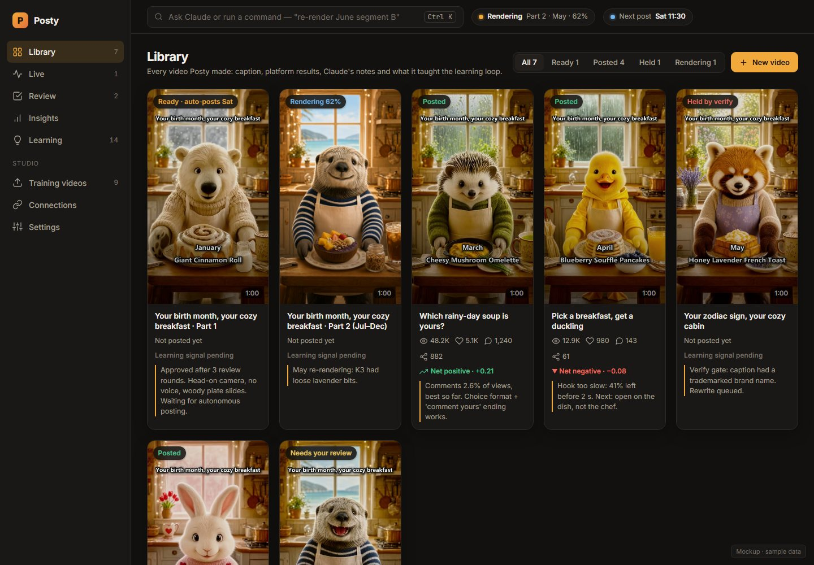
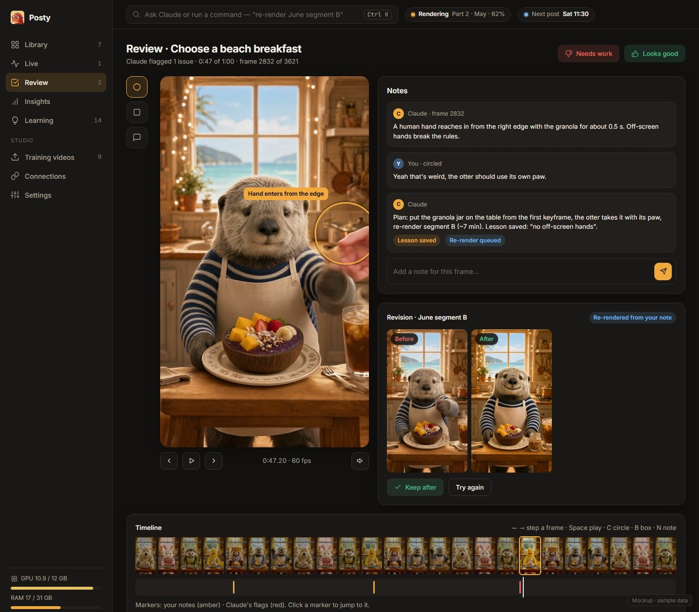

Your own animation studio for short-form video.
Posty is a Windows desktop app for creators. It plans and renders short animated videos on your own computer, lets you review every frame before anything goes out, and publishes the videos you approve to your TikTok, Instagram and YouTube accounts through each platform's official API.
See how it works
What Posty does
Makes the video
Plans a short animated video, renders it locally on your graphics card, adds captions, music and sound, and checks every frame for mistakes.
You review it
Step through it frame by frame, circle anything that's wrong, leave a note, and give it a thumbs up or down. A thumbs-down re-renders only the part you flagged.
You publish it
On the Post screen you see the preview, the caption and the account it's going to, choose the privacy and interaction settings yourself, and press Post.
It learns
Posty reads the view, like, comment and share counts of the videos it published, so you can see which topics and formats your audience prefers.
How publishing to TikTok works
- Connect your account. In Posty's Connections screen you sign in with TikTok. Posty shows your TikTok nickname and avatar so you know which account videos will go to.
- Approve a video. In the Review screen you watch the finished video and approve it.
- Post it yourself. On the Post screen you check the preview and caption, pick who can see it, choose whether comments, Duet and Stitch are allowed (nothing is preselected), set the content disclosure if it promotes something, and press Post. Posty then uploads the video file to TikTok. You can also send it to your TikTok drafts and finish it in the TikTok app.
- See how it did. Posty's Insights screen shows the video's views, likes, comments and shares.

Your data stays on your computer
Posty runs on your own PC. Your videos, notes and the statistics it reads are stored locally, and your platform sign-ins are kept in Windows Credential Manager. Posty never sells data. See the Privacy Policy for the details, including which TikTok data Posty uses and how to remove it.